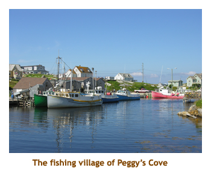

[ Home ] [ Travel ] [ Photography ] [ Pets ] [ Games] [ Rowing] [ Physics ]


Cruising on the Ocean Princess
Travel
Cruises
Past Cruises (Diaries)
Future Cruises
Rogues Galleries
Land Trips
Diaries (Land Trips)
Hawai'i - Big Island - 04'01
Hawai'i - Maui - 05'02
Hawai'i - Big Island - 04'03
Hawai'i - Kaua'i - 09'04
Hawai'i - Big Island - 04'06
Hawai'i - Maui - 04'06
Mainland China - 05'07
Phoenix, Arizona - 12'07
Greek Isles - 05'08
Hawai'i - Kaua'i - 09'08
Hawai'i - Big Island - 09'09
Hawai'i - Maui - 05'12
Hawai'i - Big Island - 04'13
Ireland - 08'13
Mexico - Cancun 11'13
France/Belgium/Lux 07'15
Hawai'i - Big Island - 05'17
England / Wales - 06'17
Hawai'i - Big Island - 09'19
Photography
Cameras
Underwater
Pets
Tara
Blackie
Whitey
Muffy
Ollie
Rusty
Fluffy
Rufus&Dufus
Games
Rowing
Physics
Rating (out of 5): Ship  Food
Food  Service
Itinerary
Service
Itinerary
We booked this cruise somewhat hesitantly as our previous experience on the Pacific Princess (identical ship) convinced us that we're not "small ship" people. However, the itinerary was exactly what we had been looking for. The only two Canadian provinces we had not visited were Nova Scotia and Newfoundland. We had also never been to Greenland or Iceland, so this cruise scratched all of our itches! There was also a chance that sandwiching the Ocean Princess between two cruises on the Oceania Nautica (also an identical R boat) would further accent what we didn't like about the ship. This was not the case though as we enjoyed the Ocean Princess more than we did the Pacific Princess. But, price aside, the Oceania implementation is a notch above Princess in most categories. (Note this is a change in opinion since I reviewed the previous Black Sea cruise.)
The itinerary was superb hitting a lot of beautiful, scenic ports. Also, there were single sea days (and one double sea day) sprinkled between the ports. No "6 in a row" like the normal mid-atlantic crossings. As most of the stops were in very small villages, this wasn't a shopping trip. We're not into shopping, so that was just fine.
Note: for those of you non-Canadians
reading this diary (or any of my diaries) there are many references to
Corner Gas. This is not an intestinal
affliction. Rather, it is a Canadian "sitcom" show that ran for 6 seasons.
I have all the DVD releases and love watching the episodes while cooling
down after a workout in the gym.
Day 1 (Jul 13) - Boarding in New York
Our flight to Toronto was a red eye, so rather than bother the kids on a worknight, we were picked up by the Calgary shuttle service at about 9:45 PM. We got to the airport at 10:15 so had a long wait until our 1:00 AM flight. I hate red eye flights! It was a 4.5 hour flight to Toronto, and, with the two hour time difference, we landed there at 7:30 AM. We had 2 hours to get our luggage and go through US preclearance. Our next leg left at 9:30 and our 1.5 hour flight to LaGuardia put us in NY by 11:00. We waited a bit for the Princess shuttle bus and drove through Brooklyn to the Red Hook Harbour. There was our ship.
Boarding was a piece of cake - no lineups at all.
One advantage of a smaller ship!
We were into our cabin by just after 12:00 noon and headed up to the buffet. Then we wandered
around the ship. It really is identical to the Oceania Nautica, right down to the cabin numbers.
We went to our old cabin on the Nautica and someone else was in it. Strange! It's really hard
not to compare everything, so we do. A couple of points to Princess, but mostly to Oceania.
The cabin trim, towels and bedding, food and service, juices, milkshakes, etc are all a bit better
on Oceania. Princess has much better cookies!

It had started to rain as we arrived in NY, and it poured all afternoon. As we found out later, the rain
storm closed the local airports about an hour after we had landed, and around 50 passengers
were delayed and missed the ship, even though we sailed almost an hour late. (About 20 of
them quit the cruise then and there, but the other 30 caught us up in Halifax.) It was not nice for
photos of the New York Harbour, skyline or statue of liberty. We found a copy of the trip log for the
previous cruise which was the reverse direction as ours, but with different ports. They had a real
mix of sun, cloud and rain, and lots of cool days. We went to dinner (6 PM seating) and met our
new dinner mates at our table-for-8. I had luau pork. During dinner the sun came out for a while, but I didn't have
my camera with me for photos. We were dead tired after being up for two days, so headed
off to bed early. And, to add insult to injury, we had to turn our clocks ahead to Atlantic time
in preparation for Halifax.
Days 2, 3 (Jul 14, 15) - A day at sea, then touring Halifax
Day 2: We slept in until 9:00 AM!! Never got up that late before!
It was a sea day so it didn't matter. The previous night had been a bit rocky,
just to get everyone acclimatized . The entire day was cool, rainy
and foggy. We couldn't see anything from the ship, and heard the fog horn
every so often. We did the morning and afternoon trivia, but didn't win anything.
Because of our late breakfast, I skipped lunch and went to the gym instead.
There was a Concept II Model D there. That's the second Princess Ship
with an erg. They must be putting them in all of their ships now. About
time! We are enjoying our dinner mates - three of us are 1950 babies and
turned 60 this year. One fellow (Doug) was a software guy and we worked on a
lot of the same old machines years ago. We have a lot in common. It
was dress up night tonight, and I had beef tenderloin. We didn't
do the entertainment tonight, just went to bed early.

Day 3: Today we were expecting another rainy day in Halifax, but we woke
up (6:30) to brilliant sunshine. It was hot and sunny all day. Halifax is a wonderful city.
We had booked a ship's tour. We drove all around the city, stopping for the view from
"The Citadel". We then headed out to Peggy's Cove. The rocks, lighthouse and village
really looked amazing in the blue sky and sunshine. We wandered through the village
looking at fishing boats and lobster traps. Just past the town was a rock outcropping to
the ocean with a whitewashed lighthouse with a red roof. In front of the lighthouse was
a young girl playing the bagpipes. We sat on the rocks for a while watching the tourists
coming and going from the lighthouse. Later, we visited a small fast food place
for ice cream cones. The ice cream (soft serve) was the best ever. Then we headed back
through the countryside to Halifax.
When we got back to the ship (about 1:00 PM) we decided to skip lunch and walk over to the nearby Superstore for pop and juice. It was about a 15 minute walk. The sun was beating down and it must have been 30 degrees. Our Elite status mini-bar set up netted me 20 free cans of pop, but I decided to get another dozen for the 18 days. Marj wanted some fruit juices.We got back to the ship around 2:00 and went to the lounge for a concert by the Halifax RCMP Pipe and Drum Band. It was very good (but loud). After the show I went to the gym where I was the only person there. I did my rowing stint and then returned to the room for some Corner Gas. Later, I met Marj on the promenade deck for sailaway at 5:00 PM. It was still lovely sunshine. We had had a great day in Halifax! I had veal oscar for dinner. Yummy! Then we went to see a comedian. He was great. Tonight we had to move our clocks forward 1/2 hour, in preparation for Newfoundland.
Days 4, 5 (Jul 16, 17) - A day at sea, then a wet day in St. Anthony
Day 4: We woke up about 7:00 AM. It was a cool, cloudy, blustery day. And,
it was a day at sea. We were travelling
up coast of NS, then across to inner passage between Newfoundland and Quebec.
Marj was still snoozing, so I went straight to the gym. Afterwards, it was Corner Gas.
I met Marj and we went to breakfast at 8:30. At 10:30 there was a lecture on St. Anthony,
tomorrow's destination. It was very interesting.
I played triva at 11:15. but our team did lousy (7 out of 15). We did the formal dining room
lunch and then attended a lecture on whales at 2:30. Afternoon trivia was at 4:15. We read
until dinner. I had the leg of lamb. We skipped the entertainment . It was a singer and
people didn't seem too impressed with him. We stayed up for late trivia at 9:45. Man, these
sea days are really exhausting! Off to bed.
Day 5: We woke up about 7:30 AM. It was cold, (8 degrees) wet and windy.
I went straight to the gym while Marj slept a bit, then came back for some Corner Gas
and breakfast at 9:30. We could be lazy this morning because were weren't supposed
to reach St. Anthony until noon. We had time for trivia at 11:15, and anchored
soon after at noon. We tendered at 12:00 and headed off on our ship's tour.
Our transportation was an old school bus, with foggy windows. It was
grey and wet outside. It was about 0.5 hour drive to L'anse aux Meadows,
a replica of the original viking settlement from about 1000 AD.
We walked around various wood and sod buildings. There were lots of viking people
(locals in costume I think) who brought to life the customs and hardships of the
early vikings in Newfoundland. Man, it was cold, especially walking through the puddles
of rain water. There were actually two sites that we visited - one a replica, and the other
an actual archaeological site. We then drove back to St. Anthony. We had some
time before departure, so went to the Co-op to get choco milk for Marj. I talked
to a girl in the shop - it was 25 degrees two days ago when we were in Halifax. Just
missed the good weather. We were back on the ship by 5:00. We changed
and headed off to dinner. The ship departed as we were eating. I had turkey pot pie.
The entertainment was Tim Barton (band leader) whom we saw in Australia (he was
the band leader on the Dawn Princess). Although he was an excellent pianist, it was
the same program as before so we skipped it. Tonight we turned our clocks forward
another half hour ready for Greenland.
Days 6,7 (Jul 18, 19) - A day at sea, then a visit to Qaqortoq, Greenland
Day 6: We woke up today to another day at sea. Out on deck it
was cool, wet and rainy. I did an early gym session, watched a Corner
Gas episode, and then we headed off for a late breakfast. After wandering
the ship a bit, we attended a 10:00 AM lecture on Qaqortoq and Nanortalik,
then played morning trivia at 11:15. We did the first
"English Pub" lunch of the cruise (fish and chips) and then
at 1:30, we met our dinner mates (Doug & Melanie) for a session of sticks.
Every cruise we have been blessed with wonderful dinnermates. This
cruise was no different as we became fast friends with D&M ( a friendly
and interesting couple) and played sticks together almost every day.
We finished early enough that we could play afternoon trivia at 4:15.
I can't remember what I had for dinner, but I am sure it was good. Afterwards
we attended the Motown Review. It was very good.
Day 7: We woke up fairly early to another beautiful, blue sky day. While I headed off to the gym, Marjorie went up on deck to photograph the iceburgs. We were to arrive at Qaqortoq (Greenland) by noon, so the morning was spent navigating through the iceburgs in the bay and anchoring. After Corner Gas and breakfast, we watched the iceburgs for a while and then did the morning trivia. We anchored at Qaqortoq around noon while we were eating lunch, and then tendered in to the small village of Qaqortoq (about 3,000 people, mostly Inuit). Due to the size and isolation of the town, there were no excursions available, so we just wandered around the town. I think the temperature was about 15 degrees. It was a gorgeous day! The harbour had lots of floating iceburgs. Qaqortoq was a pretty town with colourful buildings. The houses were connected by above ground insulated pipes that I assumed were sewage pipes. We tramped all over the village, which was very hilly. It was a beautiful village in the sunshine and we really enjoyed hiking around. Many of the Inuit families were out for a walk in the sunshine, probably checking out the ship and the passengers. There were an abnormal number of young families pushing baby carriages.
We got back on the ship at about 4:00 PM and then won at trivia!
Woohoo! Just before dinner the Captain pulled up anchor and set sail for the
village of Nanortalik. I had the Chateau Briande for dinner. We skipped
the entertainment and instead played sticks with D&M..
 |
Day 8 (Jul 20) - The little village of Nanortalik, Greenland
Today we woke up as we were nearing Nanortalik. We had an early breakfast
and watched us draw into the harbour (dodging iceburgs)
where we anchored. This was another
small village of about 1,500 people (again
mostly Inuit). It was much like Qaqortoq, but half
the size. Once again there were lots of brightly painted houses and buildings.
We were there for the full day (9:00 AM to 5:00 PM), which was a bit long
for such a small village, especially seeming as once again there were
no shore excursions. However, we were surprised to see that the natives
had put together a special
program for the Ocean Princess. There was an interesting outdoor museum
with original buildings from the 1800's (with live demos of canoeing and
kayaking), a folkloric song and dance show,
and a church choir (which had us singing along). They were serving seal
blubber on the main street, but we didn't have any. It was another blue
sky, sunny day, but the temp was only about 12 degrees. There was no wind,
so it was very pleasant.

Our walk took us around most of the village. It was strange in such a small town with 600 passengers walking around the streets. The town seemed very busy! Once again we saw many Inuit families with young babies. Among other things, we saw an elementary school, a fish processing plant and a graveyard. It was interesting seeing how they had coped with the terrain which was mostly granite and moss. There was a huge arena / sports complex and a gravel soccer field - lots of infrastructure for such a small village. There didn't seem to be much in the way of industry or employment (nor in Qaqortoq), so I presume that the natives mainly subsist on government assistance. The building that was hosting the song and dance stuff was packed with passengers, so we didn't really see much of it. However, we made sure to line up early for the church choir (performing at 12:45 PM) and really enjoyed the singing (which was in Greenlandic). The choir had us singing along at one point. The open air museum was very interesting, but we got there just as the boating demos were ending. We sat for a while on a park bench watching the iceburgs in the harbour.
We tendered back to the ship about 2:00 PM in time for a late lunch
and afternoon trivia (tied for the win). I
had pork tenderloin and spatzle for dinner. We skipped
the entertainment as it was the song and dance troupe and instead played sticks
with D&M. At 9:45 there was "Where
in the world am I?" trivia. The trivia host was hilarious, awarding points at random
and deducting points for bad behaviour (we lost hundreds of points for booing him).
We had to turn the clocks ahead another
hour tonight in preparation for Iceland. We were 5 hours ahead of Alberta now. Almost every night
we had been moving 1/2 or 1 hour ahead so we kept getting short nights.
Days 9, 10 (Jul 21, 22) - Two days at sea
Day 9: This was the first of two days at sea. The sea was very calm, but foggy so you couldn't see much. It was a typical day at sea. Up at 7:30, off to the gym to row, watch an episode of Corner Gas, then off to breakfast with Marjorie at 9:30. We went to a lecture on Grundarfjordur and Isafjordur (Iceland), then caught morning trivia at 11:15. We did the formal lunch with D&M, and then played some sticks. Afternoon trivia was at 4:15. I have no idea what I had for dinner, but I'm sure that I ate something. Evening trivia was about the 50's. I don't think we did that well.
Day 10: This was our second sea day in a row. It was a repeat of yesterday, except that
the lecture was on Akureyri and the Shetlands, and we did the "English Pub" for lunch with D&M. Sticks
and trivia filled in the afternoon. Dinner was followed by reading and we skipped the entertainment.
Day 11 (Jul 23) - A day in Grundarfjordur, Iceland
Today was a day in Grundarfjordur, our first of three ports in Iceland.
We were up early for breakfast, and watched as the ship came into Grundarfjordur harbour.
This was a tendering site, so we anchored in the bay. It was sunny with puffy clouds.
We had a ship's tour scheduled for 9:30 and headed off the ship soon after.
We boarded the bus dockside and did a brief tour
of the town of Grundarfjordur, It is a small town of about 925 people. We then headed out
around the Snaefellsnes Peninsula. We drove for quite a while along the northern coast
of the peninsula until we hit the far western coast. Our first stop was at Djupalonssandur, from
where you can see up to the Snaefellsjokull glacier in the middle of the peninsula. However,
it was by this time quite cloudy and we could not see the glacier. We walked down
a path to the beach. It was a black pebble beach with lots of strange rock formations.
The bay was once home to sixty fishing boats and one of the most prolific fishing villages
on the Snaefellsnes peninsula but today the bay is uninhabited. Four lifting stones are in
Djupalonssandur, used by fishermen to test their strength. They are Fullsterkur ("full strength")
weighing 155kg, Halfsterkur ("half strength") at 140 kg, halfdraettingur ("weakling") at 49kg
and Amlodi ("Useless") 23kg. They were traditionally used to qualify men for work on fishing
boats, with the Halfdraettingur being the minimum weight a man would have to lift onto
a ledge at hip-height to qualify.
As we resumed our bus trip, the clouds thickened and the blue sky
disappeared. Fortunately it didn't rain.
Our second stop along the south coast of the peninsula was at the little
settlement of Hellnar. Established in 1995, this is the first intentional
community in Iceland, and is based on ecological, spiritual and self-sustainable
principles. The glacier and the surrounding town are thought to be one
of the major energy centers of earth, with many spiritual attractions
and activities. The French writer Jules Verne chose it as the entrance
in his novel Journey to the Center of the Earth. The village of
Hellnar was very small, maybe 15 houses in all. We visited a nearby
museum that had many photographs of pioneering in Iceland. After
about half an hour in the village, we reboarded our bus and headed to our
3rd stop - Arnarstapi.
Arnarstapi is a fishing hamlet at the foot of the low Mt. Stapafell on the southern
side of the Snaefellsnes peninsula. According to the Bardar-Saga, this mythological
person (Arnarstapi), half a man and half an ogre,
lived in a cave in the northern slopes of this mountain.
Our first order of business was to have lunch in a wooden building with a sod roof. The
meal was excellent. It was a large fillet of cod with an herbal glaze on a bed of barley.
I had to have a Viking beer (Icelandic) with it. After lunch we walked towards the rugged
cliffs overlooking the ocean. We passed a stone monument to the hero Bardur Snaefellsas,
who protects the area from evil. Across the road there was a farm with Icelandic horses.
We stood by the electric fence and the horses came over to see us. They were stocky
and hairy - just perfect for Iceland. We continued walking along the cliffs to a small harbour
with fishing boats. The cliffs along the coastline were occupied by myriads of birds;
kittiwakes, fulmars, arctic turns and razorbills, and many others nest in the area. Finally
we reached the small fishing harbour of Arnarstapi. There we met our other dinner mates
(Ivan and Sherry) who were doing the same tour (different bus) in the reverse order.
Our bus was waiting for us there to continue our excursion.

Our 4th stop was at Budir, just a short distance along the coast. We parked near a small black church and graveyard, and walked a short distance to the ocean. As in Arnarstapi, the coast was rugged here and seemed bleak with the cloudy skies. Then we settled in for a long drive east and then north across the peninsula. The route took us over a small jut out of land to the village of Stykkisholmur. This was our 5th stop. We were able to walk around the village and explore the houses and some small shops. Continuing along the north coast, we made our 6th and final stop at Eyrarfjal, the holy mountain. There we climbed to top (300 m) and had a great view of the ocean and surrounding countryside. At the top there was the remains of a stone building, and a sun dial-like monument. Then we headed to Grundarfjordur, completing our circular tour of the peninsula. When we arrived in Grundarfjordur, the town was all decorated. Houses had decorations in the windows, on fences, small flags on lamposts, etc. The town was divided into quadrants where all the decorations were the same colour - yellow, blue, red or green depending on the quadrant. Sort of like the neighbourhoods in Sienna, Italy. There were midway rides set up in the dock area, and lots of people were lining up. They were celebrating "Good Times in Grundarfjordur ", an annual celebration at the end of July.
We were back to ship by 4:35 PM,
a little late for the last tender (but they waited). They had to hold the ship for us, but we were worth it!
For dinner I had veal cordon bleu. In the evening we skipped the entertainment and
instead played sticks with D&M.
Day 12 (Jul 24) - Isafjordur, Iceland
Today we woke up coming into the village of Isafjordur (about 3,000 people). Although
it was a small village, they had a dock that could accomodate our ship. It's always nice
to be able to walk off the ship! The day was cloudy, but about 16 degrees.
We were on a private tour today with 24 people, leaving at 9:00 AM. After a leisurely
breakfast we met on deck 4 by the purser's desk just after 8:00.
All assembled, we headed out to the bus
and started with a brief tour through the village. Then we headed southwest along the
fjord. At the inner end of the fjord, we entered a mountain tunnel that was 9 km long. The
bulk of the tunnel was single lane, where one direction of traffic had the right of way, while
the other direction had periodic pull-outs to make way for oncoming traffic. Because this area
is so unpopulated, we only met two cars coming in our direction. About half way through
the tunnel (now heading southwest) was an intersection with a tunnel leading off to the
northwest (more on this later). Heading straight ahead, we eventually came to the end
of the tunnel where we encountered the end of another fjord (Onundarfjordur). Here we
travelled up the edge of the mountain-lined fjord to the fishing village of Flateyri.
Flateyri was our first stop. It was a small fishing village with a population of about 300 people. There were some fields of something green on the face of the nearby mountain, and someone (the farmer?) had mowed out a big smiley face.We exited the bus and walked down the main street. The tour operator had arranged a snack for us at a local craft store consisting of a strawberry cream crepe, a donut and a cookie. After the snack we wandered through the village. A lot of the houses were heritage buildings and had interesting plaques outside describing the original use of each building. The houses were all well kept, and many had beautiful gardens (panseys, etc).
Towards the fishing docks, we encountered
a small cod processing plant. Several people were working there and they invited us in
for a look. They were processing a large catch of cod that must have been recently
brought in by the fishermen. The fisheries in Iceland are suffering from depletion, just as
most of the world. Most of the little villages in Iceland seem to be fishing based, so it would
be a real blow to the economy if the fishing industry was decimated. Our time was up and
we headed back to the bus. We continued south across the peninsula towards
the Dyrafjordur. Our destination was a botanical garden called Skrudur. We passed
mountains and farms with sheep and tractor eggs (white plasticized rolls of hay).
We reached the Dyrafjordur and drove west along the coast. The Skrudur gardens were at the base of a mountain in the middle of nowhere. The small garden was established by the reverend Sigtryggur Gudlaugson from 1905 to 1909. It was a teaching garden until 1980 when the nearby school was closed. A group of volunteers took over in 1992 and nursed it back to health. It was a very interesting garden with many varieties of trees, herbs, vegetables and flowering plants. The trees really stood out because there are no trees at all in the surrounding countryside.
As we returned along the shores of the fjord, we stopped at an enormous cod drying rack
alongside the road. The racks covered about half an acre and must had held thousands of fish.
Apparently the dried cod are shipped exclusively to Nigeria where the locals use them
for making a soup stock. I don't think any of our crowd were too enamoured with them!
We retraced our route across the peninsula, and re-entered the mountain tunnel. This
time we met 7 or 8 cars along the single lane section, but our direction had the right of way.
When we reached the underground intersection (that
I had mentioned earlier), we turned left and headed north west.
We exited at the end of a small fjord and drove up the coast to the end of the road.
There we stopped at the fishing village of Sudureyri. Like Flateyri, it was a small
village of about 350 people. We walked around the town and stopped in at another
fish processing plant. Here they were baiting the fishermen's "long lines" with cut up squid.
Our guide negotiated for a small bag of cut up squid to feed the cod at the cod farm down
the road a bit. As we left the village, retracing our route, we stopped at the cod farm and tossed
some squid into the water. The cod were very happy to be fed! Then it was back on
the bus, through the tunnel and back to Isafjordur.
The bus didn't take us back to the ship, but rather to a maritime museum, just a short distance from our ship. Our tour included entrance to the museum. We wandered through the exhibits, the highlight which was a number of beautiful model ships (mainly fishing boats). Then we walked back to the ship. We were onboard by 1:30 PM and had a late lunch. It was still nice out (mixed cloud and blue sky), so we did a quick walk back into the town. The town was much like the others we had seen in Iceland - interesting architecture and very clean with well kept streets and yards. After "doing the town", we hustled back aboard in time for 4:15 trivia. The ship was supposed to leave at 5:00, but was delayed until 5:30 because of a late excursion. As we were leaving we watched from the promenade deck. At the mouth of the fjord were some salmon farming pools. Then we turned east heading for Akureyri.
For dinner I had the
roast lamb. The ship had mint sauce (as well as mint jelly) and always offered your
choice of either. On other ships I have had to plead for mint sauce (if they even had it).
Once again we skipped the entertainment and played sticks with D&M. I think they
like that game! (So do we). We finished the game in time to play trivia at 9:45.
 |
Day 13 (Jul 25) - Akureyri, Iceland
Today would be our third and final stop in Iceland. It was blue sky and 20 degrees.
Absolutely perfect. We had pulled into Eyjafjordur and were ready to dock in Akureyri.
Akureyri is the second largest city in Iceland, with a population of 17,000 people.
(Reykjavik, the capital, is the largest with about 120,000 people.) We didn't have an early
excursion in the morning off, so we slept in. We had a late breakfast and then wandered
the town. This was our first port since Halifax that was a real city. Being Sunday, the shops
were closed until later in the day, but we found one tourist shop that had opened early because
of the cruise ship. I bought a beautiful Icelandic knit sweater for myself, which was fully
lined to be windproof as well. Iceland used to be
very expensive, similar to the other Scandinavian countries. However, they had a financial
crisis in 2008 and their currency was majorly devalued. As a result, there are some good
bargains there. For example, my sweater was 21,990 ISK which converted on my Visa bill
to $190.91 Cdn. The same quality of sweaters in Norway were $350 to $400 Cdn.
After shopping, we
hiked up a large set of steps to the main Lutheran cathedral. It was a beautiful church.
At 11:00 AM,
we had to get back on board, grab our stuff and then meet for our 11:30 tour. We would
be skipping lunch, but that was just fine.

Our excursion was a ship's tour, so we were in a 40 person bus. We drove out into the
mountainous countryside, passing lots of hay farms and grazing sheep. Our first stop
was at Godafoss Falls. The falls are on the Skjalfandafljot river. Although nothing like
Niagra Falls, these were nontheless impressive. Legend says that a Lawspeaker threw
his pagan idols into the waterfall when Iceland adopted Christianity. Hence the name
"Waterfall of the Gods". Then we drove about a half hour to the Grenjadarstadur
open air museum in Adaldalur. There was a cute little church and graveyard, and
some sod farm buildings from the 1800's. It was quite interesting. We popped into the
souvenir shop where we bought a puffin ball cap and a tea towel. Then we drove back
to Akureyri, once again passing through mountain valleys with grazing sheep.
Our final stop was in town at the botanical gardens. The gardens were quite large
so we spent at least 40 minutes wandering through the trees and flowers. Once again it was
nice to see trees. The range of trees and flowers was amazing. Even though the native
countryside is barren, one can grow so much with the proper care and attention.
We were back to the ship by 3:30 at last call as sail away was at 4:00 PM. We stood out
on the promenadedeck as we sailed out of the Eyjafjordur. It was a beautiful warm
late afternoon. Now it was time to say goodbye to Iceland. We had had a wonderful
time and it was certainly a rugged, beautiful country. Tonight (about 9:00) we would
be rounding an island off the north coast of Iceland and this would take us over the
Arctic Circle for about 45 minutes - just long enough to award a certificate to each
passenger commemorating the great event. I didn't note what was for dinner tonight. Afterwards
we played sticks with D&M and at 9:45 headed to the second installment of "Where
in the world am I?" trivia. Once again we didn't do too well. Tonight we had to
set our clocks ahead by one hour, bringing us to Greenwich time.
Days 14, 15 (Jul 26, 27) - A day at sea, Lerwick, Shetland Islands

Day14: After 3 days spent in ports, today was a restful day at sea sailing from
Akureyri, Iceland to Lerwick, Shetland Islands. It was misty out, so visibility was not great.
The Norwegian Sea can be very rough, but we were blessed with calm seas. In fact, our
whole trip had been good with only a couple of short periods of rock and roll. It was
a typical sea day: off to the gym to row letting Marj sleep in, back
to the cabin for an episode of Corner Gas
(Marj is up and gone by this time), finding Marj and then going for breakfast.
We played morning
and afternoon trivia, did a lecture on Bergen and Eidfjord, attended the final
"English Pub Lunch" of the cruise and played sticks with D&M.
Once again I forgot to record my dinner choice. It must have been good because I
can't remember a single meal that I didn't enjoy thoroughly.
In the evening we attended the entertainment which was a singer and a
magician / comedian double bill. It was very good. Although the Cabaret Lounge
is fairly small, there always seemed to be enough seats for everyone.
Day15: Today our stop was in the small village of Lerwick (population 7,000)
in the Shetland Islands. The Shetland Islands are part of Scotland (unwillingly),
which in turn is part of Britain (unwillingly), so you can guess the politics in
Lerwick. The Shetland Islands were part of the Norwegian "empire" until the mid 1400's, when they were
conquered by Scotland. Even after 600 years, the viking blood flows strong and
the heritage is very visibly Scandinavian. They have a flag for the islands
which is a white cross on a blue background (i.e. Scandinavian). Our tour guide made
a number of jokes at the expense of the Scots. For example, he called the Norse days
the "Middle Ages" and mid-1400's to present the "Dark Ages".
It was sunny with white puffy clouds as we pulled into Lerwick. The weather was forecast
to deteriorate through the day, so we were happy we had chosen a morning excursion. We
had breakfast and then headed off to the bus for our excursion. We were heading south
down the coast to a small island called Moussa. We left at about 9:30 and drove for about
half an hour to the village of Cunningsburg. There we boarded a small passenger ferry
for another half hour trip to the island of Moussa. Mousa (Old Norse: Mosey "moss island")
is a small island in Shetland, uninhabited since the nineteenth century. The island is known
for the Broch of Mousa, an Iron Age round tower, and is designated as a Special Protection
Area for storm-petrel breeding colonies. We docked near an old farm house and set off for
a walk around the island.
Our first stop was at some low cliffs where numerous shag were nesting. There were some
young ones in the nests waiting for their parents to return. Continuing on we arrived at the famous
broch of Mousa. The broch is the finest preserved example of a broch or round tower in Shetland, Scotland.
It is the tallest still standing in the world (44 feet) and amongst the best-preserved prehistoric buildings
in Europe. It is thought to have been constructed circa 100 BC, one of 570 brochs built
throughout Scotland. We went inside the broch and climbed the internal stairs to the top for a wonderful
view of the island. The stairs were built inside the walls so it was very dark and we had to use
flashlights. After exploring inside the broch, we regrouped outside and then headed straight
across the middle of the island to the the side.
The island was occupied by several flocks of sheep. As we traversed the island there were
small groups of sheep all over. Quite a number of them were dark brown (not black!).
On the other side of the island we came to a couple of small bays where quite a number of
common seals and grey seals were basking along the rocks in the sun (well, partial sun). As the
group of us watched from behind a low stone fence, some of the seals swam over towards us to have
a better look.
After watching the seals for a while we continued around the shores of the island eventually
reaching the abandoned farm house from the other side.There the ferry was waiting for us. By now it was
quite cloudy out and chilly. The cool ocean breeze on the ferry trip back to Cunningsburgh was
refreshing indeed!
Back on the bus, we drove back up the coast to Lerwick and did a drive through the town. The
bus stopped at the docks and let us out. It was about 1:30 PM. Instead of boarding the ship, we
did a quick walk to the nearby Co-op grocery store. Marj bought some hot chocolate pouches,
and I bought a selection of Scottish beer. It was fun checking out the local foodstuffs,
but the prices weren't fun. Back on board we had a late lunch, read a bit
and then played afternoon trivia. As the afternoon wore on, the clouds parted and it was a beautiful
sunny and warm evening. We
set sail for Bergen, Norway about 5:00. Dinner was roast lamb. Yum! We skipped the entertainment
and instead played sticks with D&M for the evening (and drank Scottish beer).
It was a wonderful day. To punish us for having such a great time, the Captain ordered
us to move our clocks ahead by one hour (again!) to match Norway time.
Day 16 (Jul 28) - Bergen, Norway
Today was a port stop in Bergen, Norway. Bergen was once the capital of Norway,
and today it is the second largest city with a population of about 250,000. We had been
here before (almost exactly a year ago) when we had taken an excursion to the home
of Ole Bull, the famous violinist. This time we had booked a ship's tour
to Edvard Grieg's house that included a piano recital,
but the tour was cancelled because only 8 people signed up for it.
Man, I was really disappointed. Doesn't anyone know who Edvard Grieg is?
Hasn't anyone been to the Hall of the Mountain King? What a bummer!
So, our only option was to get out on our own and walk around the city. To add
insult to injury, it was cloudy, cool and raining off and on. We had a quick breakfast , grabbed
our umbrellas, packed our backpacks and headed off the ship. We were docked very close
to the center of the old town, and across the street from the dock was an old fortification.
The Bergenhus Fortress contains buildings dating as far back as the 1240s, as
well as later constructions built as recently as World War II. The extent of the enclosed area of
today dates from the early 19th century. The most famous structure is Haakon's Hall built
in 1240 for King Hakon Hakonsson (1217-1263). Leaving the fortress, we walked several blocks
into the heart of the old town (Bryggen). We checked out a few of the souvenir shops and the
prices were just as high as last year. Norway is very expensive! Despite the rain, the
outdoor fish market was crowded. I was tempted to buy one of the crab and shrimp sandwiches
or salads, but they were too expensive. Instead we headed back to the ship for lunch. In the
afternoon I had time for a gym workout, followed by Corner Gas. Then we
did afternoon trivia. Dinner was rack of lamb and
diver scallops. My two favorite meals on one plate! As usual, we skipped the entertainment
and played sticks with D&M instead. We have had such a great time playing sticks and
visiting with our dinnermates. That's one of the great things about cruising - you meet
such nice people!
Day 17 (Jul 29) - Eidfjord, Norway
Today was our final port for the cruise (not counting Dover). Eidfjord is a small village of
900 people, but about 500,000 people pass through the town each year, mainly due to the
cruise industry. Obviously tourism is their main occupation! It was only about 106
nautical miles from Bergen to Eidfjord, so we had sailed very slowly through the previous
night. Our ship's excursion was a boat cruise through the fjords. We had breakfast and then
met on the dock at 9:30 AM for our boat trip. It was a beautiful morning with blue sky and
puffy white clouds. Eidfjord lies at the end of Hardanger Fjord. The fjord is lined
with steep mountains on both sides. The boat took us a ways along the fjord and then
turned into a narrow arm. We dodged to the right of a hilly island and sailed to the village of
Ulvik at the end of the arm. Ulvik is a small village of about 600 people, and the main industry
there is fruit growing. There were orchards of cherries, apples, pears and other tree fruits.
Then it was time to retrace our route back to the cruise ship. Along the way we detoured a
bit to see a new tunnel / bridge being built over the fjord. The tunnel bursts straight out
of the mountain and onto the bridge. Below the bridge was a ferry boat which is how the
residents currently cross the fjord.

We were back to the ship by about 11:30. Unfortunately
it had clouded over by this time so the town seemed rather drab without the sun. It was
definitely a tourist town, with hotels and handicraft shops (artwork, candles, clothing, etc).
They were hosting a road bike race and about 100 bikes set off while we were there.
Apparently, next weekend they are having a tri-athalon. Its the perfect spot with the
calm fjord for swimming and the mountain roads for running and biking. After exploring the
town and visiting a beautiful wooden church, we headed back onboard for lunch (about 1:00).
Departure was scheduled for 2:00 PM, so we sailed from Eidfjord just after lunch. The
Hardangerfjord is about 110 miles long, so it took us about 5 hours to reach the
open sea (North Sea). We enjoyed the passing mountains from the promenade deck.
We took a mandatory break for afternoon trivia. This evening was dress-up night, but
we had agreed earlier with D&M that we were going to boycott the tux crowd and
do an informal meal at the Bistro Restaurant (buffet area). We followed this with our
usual game of sticks.
Days 18, 19 (Jul 30, 31) - A day at sea, Dover, England and Home

Day 18: Today was our final day of the cruise and a day at sea. The weather was cool and misty. We were sailing the North Sea, heading for Dover. Although the visibility was not great, every so often we passed a group of oil platforms in the distance. It was another typical sea day spent eating, rowing (in the gym), playing trivia, eating some more, reading and, of course, playing a final game of sticks with D&M. After dinner we said goodbye to our dinnermates and went to pack our suitcases. They had to be out in the hallway by 10:00. At 9:45 we joined in the farewell trivia challenge and then said goodbye to our trivia buddies. Time for bed. But first, we got to change our clocks back tonight, actually gaining an hour!
Day 19: Today we were docked in the port of Dover. It was very misty so we couldn't see much of Dover. We had an early breakfast and vacated our room by 7:30 AM. We were off the ship by 8:30 to catch our bus to Heathrow. Our flight was direct to Calgary and was on time. The flight home was uneventful and we landed in Calgary at about 1:30 PM. Matt and Chrissy were there to pick us up. This was the end of a wonderful cruise. Loved the ship, the people and the ports of call!